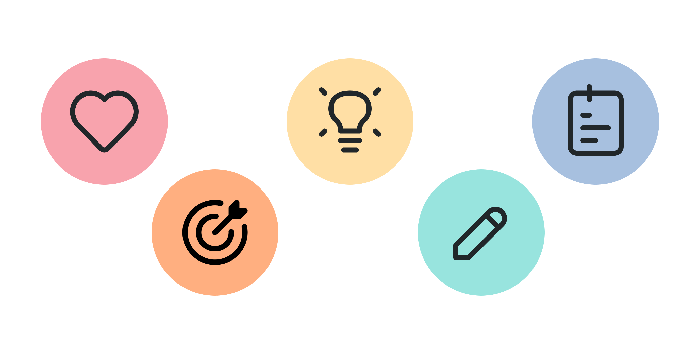
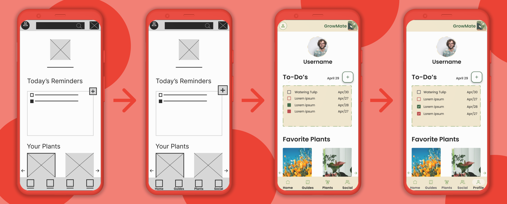

Growmate
Mobile UX Design
My Contributions
Role: UX Lead
Project Overview
The project was designed with the principle of helping people in their gardening journeys, offering a simple and easy way to access information regarding to flowers, plants, trees, etc.
Project Goal
To create a user-friendly platform that provides simple, accessible, and accurate information about various types of plants, flowers, and trees, empowering and supporting users throughout their gardening journey.
Process
To create a meaningful and user-centered solution, we followed the Design Thinking framework—starting with empathizing through user interviews and competitive analysis, then defining key user needs and challenges. From there, we ideated potential features, developed wireframes and prototypes, and continuously refined the design through usability testing and iterations.
Research
Below is an overview of the two key research methodologies we employed—what each entails, what was learned, and how those findings shaped our design.
User Interviews
To gather rich, qualitative insights on how real people currently manage plant care and what frustrates or delights them we conducted a first round of user interviews these were the key findings:
Competitive Analysis
To understand industry standards in plant‑care and adjacent wellness apps, and to uncover opportunities for differentiation. From this competitive analisys these where the key findings.
Applications Analyzed

Planter
Plant Parent
Mi Huerta
Ideation
We explored a wide range of solutions through brainstorming sessions, sketching, and affinity mapping, focusing on ways to simplify navigation, streamline reminders, and embed community features.
Design
Using our research insights, we built clean, straightforward layouts with clear labels and a soothing, nature-inspired color scheme. Early sketches evolved into clickable prototypes. Each design iteration was tested and refined until the experience felt intuitive, focused, and accessible.
Paper Wireframes
We sketched low‑fidelity wireframes on paper to rapidly explore layout options and content hierarchies. Each sheet focused on a specific user flow—onboarding, home dashboard, plant detail, reminders, and community feed.
Digital Wireframes
We sketched low fidelity wireframes on paper to rapidly explore layout options and content hierarchies. Each sheet focused on a specific user flow—onboarding, home dashboard, plant detail, reminders, and community feed.
Prototype and usability test
In our first iteration, we turned the digital wireframes into a basic clickable Figma prototype and used it to conduct our initial round of usability testing
Usability Insights
The main issue users faced was navigating the app due to unlabeled icons 5 out of 5 participants struggled with this highlighting the urgent need to add clear text labels or universally recognizable icons to the navigation bar. Additionally, with 4 out of 5 participants finding the layout unclear and functions hard to locate , it’s important to improve screen organization by adding descriptive headers, grouping related features, and making key actions like posting or setting reminders more prominent and clearly labeled.
Iterations
After analyzing usability test results, we made several iterations focused on improving navigation clarity, enhancing layout organization, and making key features easier to access.

Conclusion
This project reinforced the value of accessible design, intuitive structure, and iterative testing to support users through a satisfying and empowering experience.